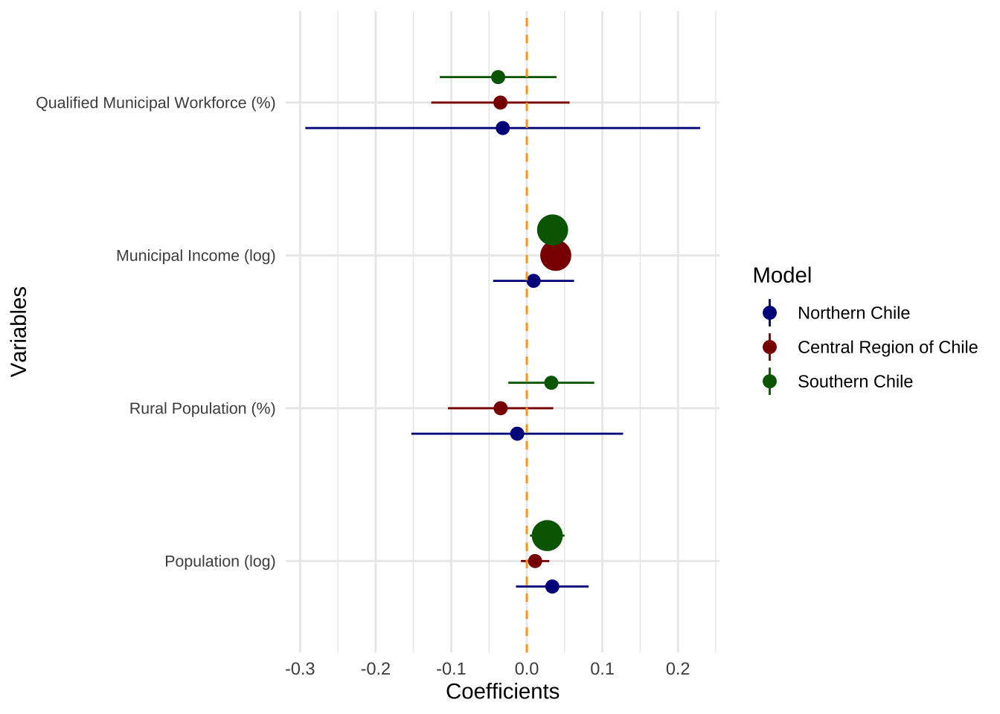

Call:
lm(formula = Municipio_Digital ~ log_Poblacion.y + Pob_Rural_Porc +
log_Ingresos_Propios_Permanentes + share_Planta_Profes, data = md_north)
Residuals:
Min 1Q Median 3Q Max
-0.148157 -0.073455 0.000573 0.048388 0.187233
Coefficients:
Estimate Std. Error t value Pr(>|t|)
(Intercept) 0.030247 0.344160 0.088 0.931
log_Poblacion.y 0.033737 0.029210 1.155 0.260
Pob_Rural_Porc -0.012642 0.085175 -0.148 0.883
log_Ingresos_Propios_Permanentes 0.009018 0.032544 0.277 0.784
share_Planta_Profes -0.031800 0.158803 -0.200 0.843
Residual standard error: 0.09718 on 22 degrees of freedom
(17 observations deleted due to missingness)
Multiple R-squared: 0.3292, Adjusted R-squared: 0.2072
F-statistic: 2.699 on 4 and 22 DF, p-value: 0.05718
Call:
lm(formula = Municipio_Digital ~ log_Poblacion.y + Pob_Rural_Porc +
log_Ingresos_Propios_Permanentes + share_Planta_Profes, data = md_centre)
Residuals:
Min 1Q Median 3Q Max
-0.182917 -0.058959 -0.005128 0.045601 0.193273
Coefficients:
Estimate Std. Error t value Pr(>|t|)
(Intercept) -0.154208 0.126425 -1.220 0.225
log_Poblacion.y 0.011002 0.011391 0.966 0.336
Pob_Rural_Porc -0.034614 0.042341 -0.818 0.415
log_Ingresos_Propios_Permanentes 0.038313 0.009202 4.164 5.6e-05 ***
share_Planta_Profes -0.034902 0.055639 -0.627 0.532
---
Signif. codes: 0 '***' 0.001 '**' 0.01 '*' 0.05 '.' 0.1 ' ' 1
Residual standard error: 0.07776 on 133 degrees of freedom
(13 observations deleted due to missingness)
Multiple R-squared: 0.4389, Adjusted R-squared: 0.422
F-statistic: 26.01 on 4 and 133 DF, p-value: 6.193e-16
Call:
lm(formula = Municipio_Digital ~ log_Poblacion.y + Pob_Rural_Porc +
log_Ingresos_Propios_Permanentes + share_Planta_Profes, data = md_south)
Residuals:
Min 1Q Median 3Q Max
-0.170554 -0.034006 -0.000757 0.037945 0.199346
Coefficients:
Estimate Std. Error t value Pr(>|t|)
(Intercept) -0.26885 0.11021 -2.439 0.0163 *
log_Poblacion.y 0.02706 0.01390 1.946 0.0541 .
Pob_Rural_Porc 0.03239 0.03455 0.938 0.3504
log_Ingresos_Propios_Permanentes 0.03410 0.01150 2.965 0.0037 **
share_Planta_Profes -0.03789 0.04692 -0.808 0.4211
---
Signif. codes: 0 '***' 0.001 '**' 0.01 '*' 0.05 '.' 0.1 ' ' 1
Residual standard error: 0.06259 on 113 degrees of freedom
(30 observations deleted due to missingness)
Multiple R-squared: 0.5014, Adjusted R-squared: 0.4838
F-statistic: 28.41 on 4 and 113 DF, p-value: 2.449e-16
Figure 3. OLS for Digital Municipality Index at the municipal level

Second Part: Analyses at the individual level, Chilean region of Valparaiso as case study
INDIVIDUAL ANALYSIS - TO REPORT
Testing with real income 2018-2023 and without education
modela_mean <-lm(ope ~ dig_mun + log_ingresos_real + sex + age + SES + intpol +factor(year), data = EOP_nona)#summary(modela_mean)coeftest(modela_mean, vcov =vcovCR(modela_mean, cluster = EOP_nona$mun_id, type ="CR2"))
modelb_mean <-lm(ope1 ~ dig_mun + log_ingresos_real + sex + age + SES + intpol +factor(year), data = EOP_nona)#summary(modelb_mean)coeftest(modelb_mean, vcov =vcovCR(modelb_mean, cluster = EOP_nona$mun_id, type ="CR2"))
modelc_mean <-lm(ope2 ~ dig_mun + log_ingresos_real + sex + age + SES + intpol +factor(year), data = EOP_nona)#summary(modelc_mean)coeftest(modelc_mean, vcov =vcovCR(modelc_mean, cluster = EOP_nona$mun_id, type ="CR2"))
modeld_mean <-lm(ope3 ~ dig_mun + log_ingresos_real + sex + age + SES + intpol +factor(year), data = EOP_nona)#summary(modeld_mean)coeftest(modeld_mean, vcov =vcovCR(modeld_mean, cluster = EOP_nona$mun_id, type ="CR2"))
modele_mean <-lm(ope4 ~ dig_mun + log_ingresos_real + sex + age + SES + intpol +factor(year), data = EOP_nona)#summary(modele_mean)coeftest(modele_mean, vcov =vcovCR(modele_mean, cluster = EOP_nona$mun_id, type ="CR2"))
modelf_nona_real <-glm(useweb_nona ~ dig_mun + log_ingresos_real + sex + age + SES + ope + intpol +factor(year), data = EOP_nona, family = binomial)#summary(modelf_nona_real)coeftest(modelf_nona_real, vcov =vcovCR(modelf_nona_real, cluster = EOP_nona$mun_id, type ="CR2"))
modelg_nona_real <-glm(useadm_nona ~ dig_mun + log_ingresos_real + sex + age + SES + ope + intpol +factor(year), data = EOP_nona, family = binomial)#summary(modelg_nona_real)coeftest(modelg_nona_real, vcov =vcovCR(modelg_nona_real, cluster = EOP_nona$mun_id, type ="CR2"))
modelh_nona_real <-glm(useinfo_nona ~ dig_mun + log_ingresos_real + sex + age + SES + ope + intpol +factor(year), data = EOP_nona, family = binomial)#summary(modelh_nona_real)coeftest(modelh_nona_real, vcov =vcovCR(modelh_nona_real, cluster = EOP_nona$mun_id, type ="CR2"))
modeli_nona_real <-glm(usetransp_nona ~ dig_mun + log_ingresos_real + sex + age + SES + ope + intpol +factor(year), data = EOP_nona, family = binomial)#summary(modeli_nona_real)coeftest(modeli_nona_real, vcov =vcovCR(modeli_nona_real, cluster = EOP_nona$mun_id, type ="CR2"))
modelj_nona_real <-glm(useother_nona ~ dig_mun + log_ingresos_real + sex + age + SES + ope + intpol +factor(year), data = EOP_nona, family = binomial)#summary(modelj_nona_real)coeftest(modelj_nona_real, vcov =vcovCR(modelj_nona_real, cluster = EOP_nona$mun_id, type ="CR2"))
# Create a binary variable for pre- and post-pandemicEOP_nona$post_pandemic <-ifelse(EOP_nona$year <=2020, 0, 1)modela_pan <-lm(ope ~ dig_mun + log_ingresos_real + sex + age + SES + intpol + post_pandemic, data = EOP_nona)#summary(modela_pan)coeftest(modela_pan, vcov =vcovCR(modela_pan, cluster = EOP_nona$mun_id, type ="CR2"))
t test of coefficients:
Estimate Std. Error t value Pr(>|t|)
(Intercept) 0.51248929 0.26319413 1.9472 0.051544 .
dig_mun 0.22682823 0.28099534 0.8072 0.419555
log_ingresos_real -0.03523447 0.01558701 -2.2605 0.023814 *
sex -0.12181889 0.01945876 -6.2604 4.021e-10 ***
age -0.00570175 0.00042892 -13.2934 < 2.2e-16 ***
SES 0.06195253 0.01457162 4.2516 2.145e-05 ***
intpol 0.41528668 0.02874359 14.4480 < 2.2e-16 ***
post_pandemic 0.12669458 0.04342978 2.9172 0.003541 **
---
Signif. codes: 0 '***' 0.001 '**' 0.01 '*' 0.05 '.' 0.1 ' ' 1
modela_pan_int1 <-lm(ope ~ dig_mun + log_ingresos_real + sex + age + SES + intpol + post_pandemic + log_ingresos_real * post_pandemic , data = EOP_nona)#summary(modela_pan_int1)coeftest(modela_pan_int1, vcov =vcovCR(modela_pan_int1, cluster = EOP_nona$mun_id, type ="CR2"))
t test of coefficients:
Estimate Std. Error t value Pr(>|t|)
(Intercept) 1.04776109 0.36422797 2.8767 0.004029 **
dig_mun 0.22565060 0.27834799 0.8107 0.417573
log_ingresos_real -0.06810405 0.02159146 -3.1542 0.001615 **
sex -0.12128106 0.01979580 -6.1266 9.364e-10 ***
age -0.00570825 0.00042378 -13.4699 < 2.2e-16 ***
SES 0.06206261 0.01470287 4.2211 2.455e-05 ***
intpol 0.41691234 0.02888178 14.4351 < 2.2e-16 ***
post_pandemic -0.97375544 0.42330246 -2.3004 0.021450 *
log_ingresos_real:post_pandemic 0.06722204 0.02540754 2.6458 0.008166 **
---
Signif. codes: 0 '***' 0.001 '**' 0.01 '*' 0.05 '.' 0.1 ' ' 1
modela_pan_int2 <-lm(ope ~ dig_mun + log_ingresos_real + sex + age + SES + intpol + post_pandemic + dig_mun * post_pandemic , data = EOP_nona)#summary(modela_pan_int2)coeftest(modela_pan_int2, vcov =vcovCR(modela_pan_int2, cluster = EOP_nona$mun_id, type ="CR2"))
t test of coefficients:
Estimate Std. Error t value Pr(>|t|)
(Intercept) 0.60218007 0.29332946 2.0529 0.04011 *
dig_mun 0.07241721 0.34695957 0.2087 0.83467
log_ingresos_real -0.03452520 0.01533747 -2.2510 0.02441 *
sex -0.12209068 0.01933983 -6.3129 2.871e-10 ***
age -0.00570502 0.00042158 -13.5326 < 2.2e-16 ***
SES 0.06177155 0.01484118 4.1622 3.182e-05 ***
intpol 0.41565929 0.02876522 14.4501 < 2.2e-16 ***
post_pandemic -0.06565494 0.18340505 -0.3580 0.72037
dig_mun:post_pandemic 0.29573288 0.30751856 0.9617 0.33624
---
Signif. codes: 0 '***' 0.001 '**' 0.01 '*' 0.05 '.' 0.1 ' ' 1